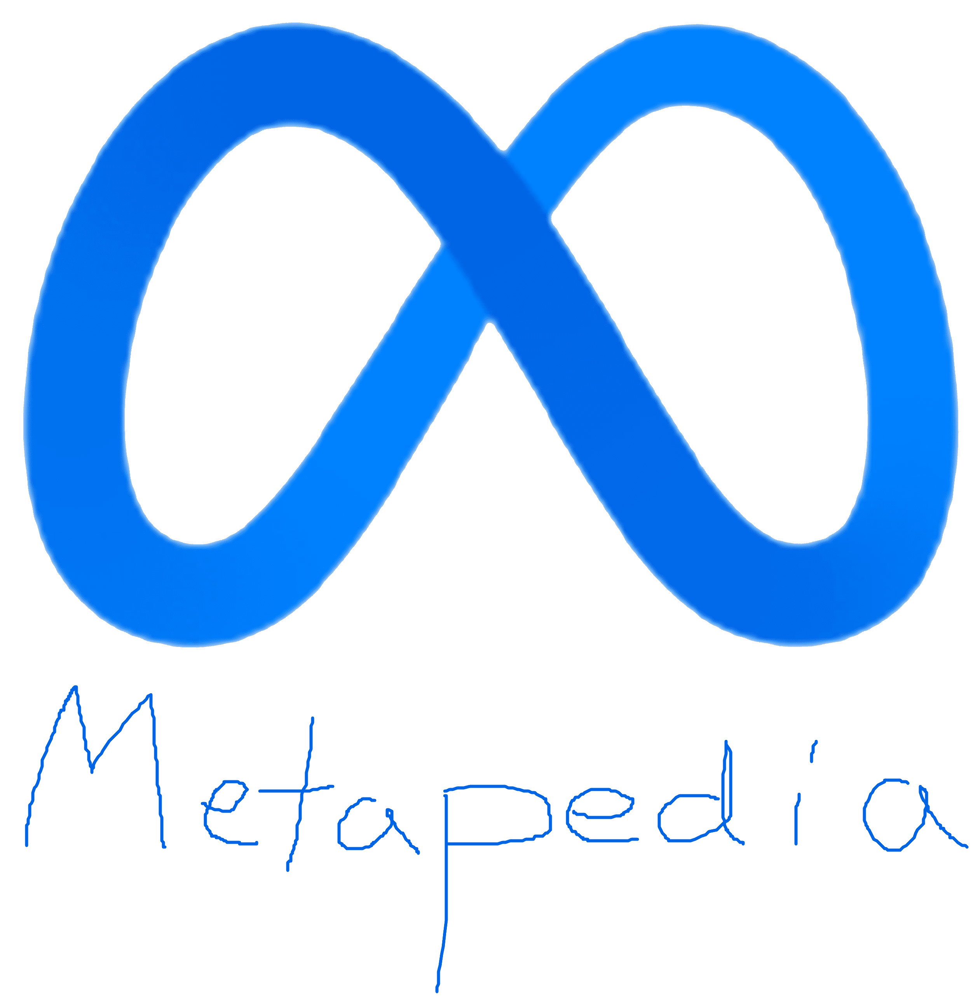

<!doctype html>
<html class="no-js" lang="en">
    <head>
        <meta charset="utf-8">
        <meta http-equiv="x-ua-compatible" content="ie=edge">
        <title>Editing Plymouth-Canton Educational Plaza</title>
        <meta name="description" content="">
        <meta name="viewport" content="width=device-width, initial-scale=1">
		<link rel="canonical" href="http://html5-templates.com/" />
        <link rel="apple-touch-icon" href="zuck.png">
        <link rel="stylesheet" href="style.css">
        <script src="js/vendor/modernizr-2.8.3.min.js"></script>
		<script src="https://code.jquery.com/jquery-1.12.0.min.js"></script>
        <script>window.jQuery || document.write('<script src="js/vendor/jquery-1.12.0.min.js"><\/script>')</script>
        <script src="script.js"></script>
    </head>
    <body onload="checkCookie()"></body>
		<!--f(m)=m^(3)-822m^(2)-2382400m+52800000-->
		<div class="wrapAll clearfix">
			<div class="sidebar">
				<div class="logo">
					<a href="/"></a>
				</div>
				<div class="navigation">
					<ul>
						<li><a href="https://smashthewalls.com" onclick="openLinks()" target="_blank">Main page</a></li>
						<li><a href="https://smashthewalls.com" onclick="openLinks()" target="_blank">Contents</a></li>
						<li><a href="https://harvisha.weebly.com" onclick="shit()" target="_blank">Featured content</a></li>
					</ul>
					<h3>Information</h3>
					<ul>
						<li><a href="https://thatsthefinger.com" onclick="openLinks()" target="_blank">Help</a></li>
						<li><a href="https://thatsthefinger.com" onclick="openLinks()" target="_blank">About</a></li>
						<li><a href="https://mondrianandme.com" onclick="openLinks()" target="_blank">Portal</a></li>
					</ul>
				</div>
			</div>
			<div class="mainsection">
				<div class="headerLinks">
					<span class="user">Not logged in</span> <a href="https://mondrianandme.com" onclick="openLinks()" target="_blank">Talk</a> <a href="https://smashthewalls.com" onclick="openLinks()" target="_blank">Contributions</a> <a href="https://www.facebook.com/r.php?locale=en_US&display=page">Create account</a> <a href="https://www.facebook.com/login">Log in</a>
				</div>
				<div class="tabs clearfix">
					<div class="tabsLeft">
						<ul>
							<li><a href="https://p-cep.github.io" class="active" onclick="openLinks()" target="_blank">Article</a></li>
							<li><a href="https://p-cep.github.io" onclick="openLinks()" target="_blank">Talk</a></li>						
						</ul>
					</div>
					<div id="simpleSearch">
						<input type="text" name="searchInput" id="searchInput" placeholder="Search Metapedia" size="12" />
						<div id="submitSearch"></div>
					</div>
					<div class="tabsRight">
						<ul>
							<li><a href="index.html">Read</a></li>
							<li><a href="edit.html" class="active">Edit</a></li>						
							<li><a href="https://p-cep.github.io" onclick="openLinks()" target="_blank">View history</a></li>						
						</ul>
					</div>
				
				</div>
				<div class="article">
					<h1>Editing Plymouth-Canton Educational Plaza</h1><br>
					<form onsubmit="shit()">
					<textarea id="w3review" name="w3review" rows="28" cols="170">
						<div class="articleRight">
							<div class="articleRightInner">
								<video width="320" height="240" controls>
									<source src="kyle.mp4" type="video/mp4">
							</div>
							This is a Kyle. Do not be like Kyle.
						</div>
						<p>Согласно всем известным законам авиации, пчела не может летать. Его крылья слишком малы, чтобы оторвать его толстое тельце от земли. Пчела, конечно, все равно летает. Потому что пчел не волнует, что люди считают невозможным ». ПОСЛ. 75 - «ВВЕДЕНИЕ В БАРРИ» ИНТ. ДОМ БЕНСОНА - ДЕНЬ УГОЛ НА: Кроссовки на земле. Камера перемещается вверх, показывая БАРРИ БЕНСОН УГОЛ СПАЛЬНИ: рука Барри листает разные свитера в своем туалете. БАРРИ Желто-черный, желто-черный, желто-черный, желто-черный, желто-черный, желто-черный ... охх, черный и желтый ... УГОЛ: Барри в свитере, который он выбрал, смотрит в зеркало. БАРРИ (ПРОДОЛЖЕНИЕ) Да, давайте немного встряхнем. Он выбирает черный и желтый. Затем он идет к раковине, снимает крышку с ЕМКОСТИ МЕДА и засыпает медом волосы. Он впрыскивает немного в рот и полоскает горло. Затем он снимает крышку с бутылки и намазывает ее, как дезодорантом. ВЫРЕЗАТЬ: INT. БЕНСОН ДОМ КУХНЯ - ПРОДОЛЖЕНИЕ Мать Барри, ДЖАНЕТ БЕНСОН, кричит Барри. ДЖАНЕТ БЕНСОН Барри, завтрак готов! ВЫРЕЗАТЬ: "Bee Movie" - РЕДАКЦИИ JS 13.08.07 1. INT. КОМНАТА БАРРИ - ПРОДОЛЖЕНИЕ БАРРИ Идет! Звуковые эффекты: ЗВОНОК телефона. Усики Барри вибрируют, когда звонят, как телефон. Руки Барри мокрые. Он ищет полотенце. БАРРИ (ПРОДОЛЖЕНИЕ) Подожди секунду! Он вытирает руки свитером и прижимает усики к уху и рту. БАРРИ (ПРОДОЛЖЕНИЕ) Привет? Его лучший друг, АДАМ ФЛАЙМАН, находится на другом конце провода. АДАМ Бэрри? БАРРИ Адам? АДАМ Можете ли вы поверить, что это происходит? БАРРИ Не могу в это поверить. Я тебя подберу. Барри втыкает жало в точилку. SFX: ЖУЖЕНИЕ, КАК ЕГО УЖАЛО ЗАСТРЕЛИВАЕТСЯ. Он проверяет резкость пальцем. SFX: Bing. БАРРИ (ПРОДОЛЖЕНИЕ) Выглядит остро. УГОЛ НА: Барри парит по коридору, сползая по перилам лестницы. Мать Барри, ДЖАНЕТ БЕНСОН, на кухне. ДЖАНЕТ БЕНСОН Барри, почему ты не используешь лестницу? Ваш отец заплатил за это хорошие деньги. "Bee Movie" - JS REVISIONS 8/13/07 2. БАРРИ Извините, я взволнован. Входит отец Барри, МАРТИН БЕНСОН. Он читает ГАЗЕТУ с ЗАГОЛОВКОЙ: «Королева рождает тысячи корней: отдыхая с комфортом». МАРТИН БЕНСОН Вот выпускник. Мы очень гордимся тобой, сынок. И отличный табель успеваемости, все четверки</p>
						<div class="contentsPanel">
							<div class="contentsHeader">Contents</div>
							<ul>
								<li>
									<span>1</span><a href="https://p-cep.github.io">History</a>
									<ul>
										<li><span>1.1</span><a href="https://p-cep.github.io" onclick="openLinks()" target="_blank">Camel's hair pencil</a> </li>
										<li><span>1.2</span><a href="https://p-cep.github.io" onclick="openLinks()" target="_blank">Discovery of graphite deposit</a> </li>
										<li><span>1.3</span><a href="https://p-cep.github.io" onclick="openLinks()" target="_blank">Wood holders added </a></li>
										<li><span>1.4</span><a href="https://p-cep.github.io" onclick="openLinks()" target="_blank">The pencil in America </a></li>
										<li><span>1.5</span><a href="https://p-cep.github.io" onclick="openLinks()" target="_blank">Eraser attached </a></li>							
										<li><span>1.6</span><a href="https://p-cep.github.io" onclick="openLinks()" target="_blank">Marking material </a></li>							
										<li><span>1.7</span><a href="https://p-cep.github.io" onclick="openLinks()" target="_blank">Pencil extenders </a></li>							
									</ul>
								</li>
								<li><span>2</span><a href="https://p-cep.github.io" onclick="openLinks()" target="_blank">Health</a></li>
								<li><span>3</span><a href="https://p-cep.github.io" onclick="openLinks()" target="_blank">Manufacture</a></li>
								<li><span>4</span><a href="https://p-cep.github.io" onclick="openLinks()" target="_blank">Grading and classification</a></li>
							</ul>
						</div>
						<h2>Пчелиный фильм - отличный фильм</h2>
						<h3>Часть первая</h3>
						<p>ДЖАНЕТ БЕНСОН кричит Барри. ДЖАНЕТ БЕНСОН Барри, завтрак готов! ВЫРЕЗАТЬ: "Bee Movie" - РЕДАКЦИИ JS 13.08.07 1. INT. КОМНАТА БАРРИ - ПРОДОЛЖЕНИЕ БАРРИ Идет! Звуковые эффекты: ЗВОНОК телефона. Усики Барри вибрируют, когда звонят, как телефон. Руки Барри мокрые. Он ищет полотенце. БАРРИ (ПРОДОЛЖЕНИЕ) Подожди секунду! Он вытирает руки свитером и прижимает усики к уху и рту. БАРРИ (ПРОДОЛЖЕНИЕ) Привет? Его лучший друг, АДАМ ФЛАЙМАН, находится на другом конце провода. АДАМ Бэрри? БАРРИ Адам? АДАМ Можете ли вы поверить, что это происходит? БАРРИ Не могу в это поверить. Я тебя подберу. Барри втыкает жало в точилку. SFX: ЖУЖЕНИЕ, КАК ЕГО УЖАЛО ЗАСТРЕЛИВАЕТСЯ. Он проверяет резкость пальцем. SFX: Bing. БАРРИ (ПРОДОЛЖЕНИЕ) Выглядит остро. УГОЛ НА: Барри парит по коридору, сползая по перилам лестницы. Мать Барри, ДЖАНЕТ БЕНСОН, на кухне. ДЖАНЕТ БЕНСОН Барри, почему ты не используешь лестницу? Ваш отец заплатил за это хорошие деньги. "Bee Movie" - JS REVISIONS 8/13/07 2. БАРРИ Извините, я взволнован. Отец Барри,</p>
						<p>МАРТИН БЕНСОН, ВХОДИТ. Он читает ГАЗЕТУ с ЗАГОЛОВКОЙ: «Королева рождает тысячи корней: отдыхая с комфортом». МАРТИН БЕНСОН Вот выпускник. Мы очень гордимся тобой, сынок. И отличный табель успеваемости, все четверки. ДЖАНЕТ БЕНСОН (растягивает волосы Барри)</p>
						<p>Очень гордимся. БАРРИ Ма! У меня тут кое-что происходит. Барри поправляет волосы и собирается уходить. ДЖАНЕТ БЕНСОН У тебя на пухе немного ворса. Она снимает это. БАРРИ Ой, это я! МАРТИН БЕНСОН Помаши нам. Мы будем в ряду 118 000 человек. Барри отстегивает. БАРРИ Пока! ДЖАНЕТ БЕНСОН Барри, я же говорила тебе, перестань летать в доме!</p>
						<h3>часть вторая</h3>
						<p>ВЫРЕЗАТЬ: ПОСЛ. 750 - ПОЕЗДКА НА ВЫПУСК ВНЕШНЕГО. Пчелиный пригород - УТРО ОТКРЫВАЕТСЯ ДВЕРЬ ГАРАЖА. Барри уезжает на своем МАШИНЕ. "Bee Movie" - JS REVISIONS 13.08.07 3. УГОЛ: друг Барри, АДАМ ФЛАЙМАН, стоит у обочины. Он читает ГАЗЕТУ с ЗАГОЛОВКОЙ: «Фрисби попадает в улей: Интернет не работает. Би-Стендер: «Я услышал звук, и следующее, что я понял ... бух!». Барри подъезжает, останавливается перед Адамом. Адам вскакивает. БАРРИ Привет, Адам. АДАМ Привет, Барри. (указывая на волосы Барри) Это пушистый гель? БАРРИ Немного. Это особенный день. Наконец-то закончил. АДАМ Я никогда не думал, что у меня это получится. БАРРИ Да, три дня в начальной школе, три дня в средней школе. АДАМ Это было так неловко. БАРРИ Три дня в колледже. Я рад, что однажды уехал посередине и просто путешествовал автостопом по улью. АДАМ: Ты вернулся другим. Они проезжают мимо бегущей пчелы. АРТИ Привет, Барри! БАРРИ (пчелке-пешеходу) Эй, Арти, отращивает усы? Выглядит неплохо. Барри и Адам едут из пригорода в город. АДАМ Эй, ты слышал о Фрэнки? "Bee Movie" - JS REVISIONS 8/13/07 4. БАРРИ Да. АДАМ Ты идешь на его похороны? БАРРИ Нет, я не пойду на его похороны. Все знают, что ты ужалишь кого-то, кого умрешь, на белку не тратить. У него была такая горячая голова. АДАМ Да, я думаю, он мог просто уйти с дороги. ПРИВОД через петлю де петлю. БАРРИ И АДАМ Ого ... Ого ... оуу !!
						</p>
						<p>АДАМ Мне нравится, что парк развлечений стал частью нашего обычного дня. БАРРИ Я думаю, поэтому они говорят, что нам не нужны каникулы. ВЫРЕЗАТЬ: ПОСЛ. 95 - ВЫПУСК ВНЕШНЕГО. ЦЕРЕМОНИЯ ВЫПУСКНИКА - ПРОДОЛЖЕНИЕ Барри и Адам останавливаются.</p>
						<h2>Будущее</h2>
						<p>Они выходят из машины и летят над толпой на свои места. * БАРРИ * (re: выпускной) * Мальчик, довольно пышный ... при * обстоятельствах. * Они приземляются на свои места. БАРРИ (ПРОДОЛЖЕНИЕ) Ну, Адам, сегодня мы мужчины. "Bee Movie" - JS REVISIONS 8/13/07 5. ADAM Мы. БАРРИ Пчелы. АДАМ Аминь! БАРРИ Аллилуйя. Барри бьет Адама по лбу. Адам впадает в восхищение. Объявление приходит по PA. ДИКТОР (ЗК) Студенты, преподаватели, выдающиеся пчелы ... добро пожаловать, Дин Баззуэлл. УГОЛ: ДИН БУЗЦВЕЛЛ поднимается на подиум. На подиуме есть табличка с надписью: «Добро пожаловать в выпускной класс:», с цифрами в стиле вокзалов после нее. BUZZWELL Добро пожаловать в новый выпускной класс города-улья ... Цифры на подиуме меняются на 9:15. БУЦЗВЕЛЛ (ПРОДОЛЖЕНИЕ) ... 9:15. (он прочищает горло) И на этом наши выпускные церемонии завершаются. </p>
						
						<div class="lavenderBox">
							<div class="header">Stuff</div>
							<div class="subtitle linklist"><a href="https://perpetual.pizza/" onclick="openLinks()" target="_blank">Lorem</a> <a href="https://perpetual.pizza/" onclick="openLinks()" target="_blank">Ipsum</a> <a href="https://p-cep.github.io" onclick="openLinks()" target="_blank">Dolorestitas</a> </div>
							<div class="linklist">
								<a href="https://p-cep.github.io" onclick="openLinks()" target="_blank">Percipit </a> <a href="https://perpetual.pizza/" onclick="openLinks()" target="_blank">Mnesarchum </a> <a href="https://p-cep.github.io" onclick="openLinks()" target="_blank">Molestie </a> <a href="https://p-cep.github.io" onclick="openLinks()" target="_blank">Phaedrum </a> <a href="https://p-cep.github.io" onclick="openLinks()" target="_blank"> Luptatum constituam </a> <a href="https://p-cep.github.io" onclick="openLinks()" target="_blank">Habeo adipisci </a> <a href="https://p-cep.github.io" onclick="openLinks()" target="_blank">Inani zril  </a> <a href="https://p-cep.github.io" onclick="openLinks()" target="_blank">Forensibus sea </a> <a href="https://p-cep.github.io" onclick="openLinks()" target="_blank">Habeo adipisci </a> <a href="https://p-cep.github.io" onclick="openLinks()" target="_blank">Minimum corrumpit </a> <a href="https://p-cep.github.io" onclick="openLinks()" target="_blank">Regione suscipit </a> <a href="https://p-cep.github.io" onclick="openLinks()" target="_blank">Has et partem </a><a href="https://p-cep.github.io" onclick="openLinks()" target="_blank">Percipit </a> <a href="https://p-cep.github.io" onclick="openLinks()" target="_blank">Mnesarchum </a> <a href="https://p-cep.github.io" onclick="openLinks()" target="_blank">Molestie </a> <a href="https://p-cep.github.io" onclick="openLinks()" target="_blank">Phaedrum </a> <a href="https://p-cep.github.io" onclick="openLinks()" target="_blank">Luptatum constituam </a> <a href="https://p-cep.github.io" onclick="openLinks()" target="_blank">Habeo adipisci </a> <a href="https://p-cep.github.io" onclick="openLinks()" target="_blank">Inani zril  </a> <a href="https://p-cep.github.io" onclick="openLinks()" target="_blank">Vel nisl albucius </a> <a href="https://p-cep.github.io" onclick="openLinks()" target="_blank">Habeo adipisci </a> <a href="https://p-cep.github.io" onclick="openLinks()" target="_blank">Minimum corrumpit </a> <a href="https://p-cep.github.io" onclick="openLinks()" target="_blank">Regione suscipit </a> <a href="https://p-cep.github.io" onclick="openLinks()" target="_blank">Percipit maiestatis </a> <a href="https://p-cep.github.io" onclick="openLinks()" target="_blank">Regione suscipit </a> <a href="https://p-cep.github.io" onclick="openLinks()" target="_blank">Percipit maiestatis </a>
							</div>
							
							<div class="subtitle">Subtitle?</div>
						</div>
						
						<div class="categories">
							<a href="https://p-cep.github.io" onclick="openLinks()" target="_blank">Minimum corrumpit </a> <a href="https://p-cep.github.io" onclick="openLinks()" target="_blank">Regione suscipit </a> <a href="https://p-cep.github.io" onclick="openLinks()" target="_blank">Has et partem </a>
						</div>
					</textarea>
					<br>
					<button class="button button2"><strong>Publish changes</strong></Publish></button>
				</form>
				</div>
				<div class="pagefooter">
					©2021 Meta Platforms, Inc.
					<div class="footerlinks">
						<a href="https://perpetual.pizza/" onclick="openLinks()" target="_blank">Privacy policy</a> <a href="https://perpetual.pizza/" onclick="openLinks()" target="_blank">About</a> <a href="https://p-cep.github.io">Terms and conditions</a> <a href="https://p-cep.github.io" onclick="openLinks()" target="_blank">Cookie statement</a> <a href="https://p-cep.github.io" onclick="openLinks()" target="_blank">Developers</a>
					</div>
				</div>
			
			
			</div>		
		</div>

    </body>
</html>
